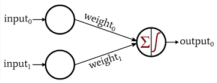

What is Machine Learning?
Machine learning is the study of special computer algorithms that improve automatically over time. Whereas in normal programming, a computer is explicitly told what to do, machine learning uses certain mathematical methods to allow computers to "learn" by themselves. A few of the applications of machine learning are:
- Recommended content in various social media platforms
- The diagnosis of different diseases
- The increased capabilities of robots to complete precise tasks such as surgery
How does Machine Learning Work?
While the above examples may seem unrelated, they all involve one thing: data. The goal of machine learning is to use computer-based methods to find helpful insights from data.
Consider an example of the first application mentioned: YouTube has to decide what videos to recommend to an individual that will maximize the amount of time the individual spends watching videos on YouTube. In order to accomplish this task, the website analyzes a vast array of data that they have collected on the individual in the past to predict which types of videos they can recomend that will maximize the future watch time. This data relates a video's characteristics to whether or not the video has been watched by the individual. In reality, the data involves many different variables; however, for the sake of simplicity, let's assume that the independent variables in this scenario are the length of the video and the number of views the video has, and the dependent variable is whether or not the individual watched the video. A possible subset of the data is shown in the table below:
| Video Length (min) | Number of Views | Watched? |
|---|---|---|
| 1 | 500,000 | Yes |
| 7 | 200 | No |
| 5 | 3,650,000 | Yes |
| 12 | 900,000 | No |
| 0.5 | 48 | No |
| 4 | 12,000,000 | Yes |
Now let's say we have a few options of different videos to recommend, and we need to recommend one of them based on this data. In this case, since there are not many variables or data points we can probably find patterns ourselves that will tell us what videos are more likely to be watched; in reality, however, there can be petabytes of complex data that would be impossible to analyze by hand.
Instead, we can use a machine learning model to automate this process. A machine learning model is like a mathematical function; it takes in an input and produces an output. In our case, we need a machine learning model that will take the length of a video and the number of views it has as input and output either "yes" or "no", depending on whether or not the individual will watch the video. This way, we can create a system that will only recommend videos that the individual is likely to watch (according to our model).
One type of machine learning model we can use is a perceptron (pictured above). A perceptron is a machine learning model that takes multiple numbers as input and outputs a number between 0 and 1. In our case, an output closer to 1 would mean the video is more likely to be watched and an output closer to 0 would mean the video is less likely to be watched. In particular, a perceptron is a chain of mathematical functions. The first function looks like this:
$$g(x0, x1) = w0*x0+w1*x1$$where \(x0\) is the first input (the length of the video), \(x1\) is the second input (the number of views the video has), and \(w0\) and \(w1\) are parameters of the function that determine how significant each of the inputs are (a higher weight means the corresponding input has a higher significance to the output).
The second function looks like this:
$$f(x) = \frac{1}{1+e^{-x}}$$This takes the output of the first function and "squishes" it between 0 and 1. For very large negative inputs this outputs numbers very close to 0 and for very large positive inputs this outputs numbers very close to 1.
The perceptron can be thought of as \(f(g(x0,x1))\); it takes as input the length and views of a video and outputs a number close to 0 is the video is not likely to be watched and close to 1 if it is. Now, we just need to know how the parameters \(w0\) and \(w1\) are chosen. These parameters are at first randomized, then optimized during a process known as training. During training, the model essentially loops through each previous data point available, predicting what the output of each input should be according to the current state of the model. It then calculates its own error by comparing its predicted output to the actual output. One common metric to calculate the error is known as mean squared error (MSE) :
$$m(p,a) = \frac{1}{n}\sum_{i=1}^{n}{\Big(p_i-a_i)^2}$$where \(p\) is the set of predicted values and \(a\) is the set of actual values.